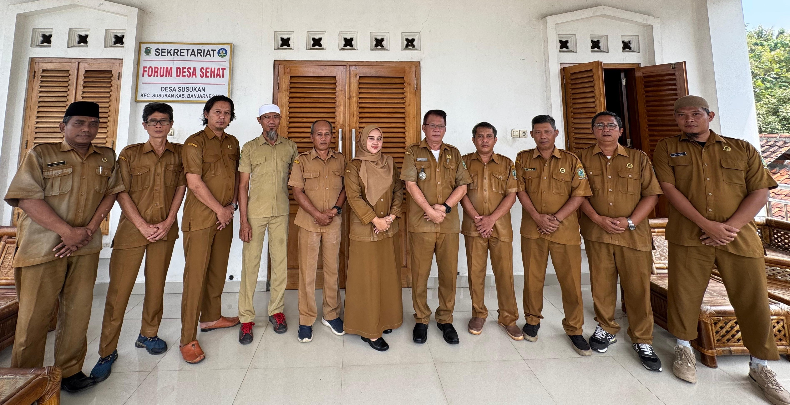

-

- 
Pengembangan program pemberdayaan warga, penguatan ekonomi lokal, serta peningkatan tata kelola pemerintahan desa.
Transparansi
Layanan
Pemberdayaan
Potensi
Cepat
Visi Desa
“SUSUKAN BANGKIT MENUJU DESA YANG AGAMIS, BERMARTABAT, CERDAS & SEJAHTERA” (ABC - S).
Misi Desa
- Mewujudkan masyarakat Desa Susukan yang berkualitas, kreatif, inovatif dengan memanfaatkan teknologi.
- Mewujudkan pemerintahan Desa Susukan yang handal untuk peningkatan pelayanan masyarakat.
- Mewujudkan kehidupan yang kondusif, dan agamis.
- Memperkuat ekonomi kerakyatan yang berbasis keunggulan lokal desa.
Pengelolaan Dana Desa yang Terbuka & Bertanggung Jawab
Pemerintah Desa Susukan berkomitmen menjalankan pembangunan desa secara transparan melalui publikasi penggunaan APBN/APBDes. Setiap program pembangunan, pemberdayaan masyarakat, serta pelayanan publik didukung oleh pengelolaan dana yang akuntabel dan dapat diakses masyarakat.
Pelayanan administrasi sekarang lebih cepat dan mudah. Informasi desa juga makin terbuka.
Website profil desa ini jadikanlah untuk memajukan Desa Susukan yang maju dan mendunia.
Kegiatan kemasyarakatan makin aktif. Program desa terasa lebih terarah dan bermanfaat.
Website profil desa ini membantu sekali untuk melihat informasi layanan dan pengumuman terbaru.